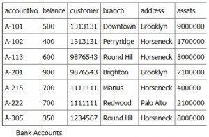
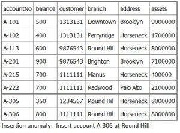
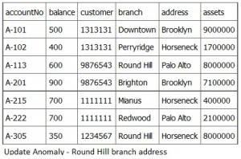
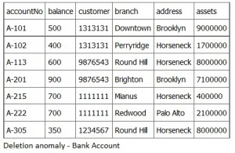
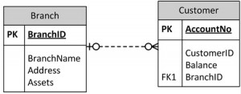
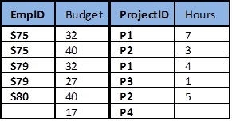
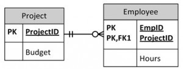
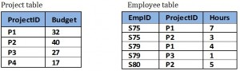
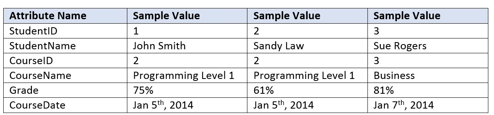

ER Modelling
النمذجة باستخدام نموذج الكيانات والعلاقات
المتن الرئيسي
Key Terms
deletion anomaly: occurs when you delete a record that may contain attributes that shouldn’t be deleted
functional dependency (FD): describes how individual attributes are related
insertion anomaly: occurs when you are inserting inconsistent information into a table
join: used when you need to obtain information based on two related tables
update anomaly: changing existing information incorrectly
تتمحور إحدى أهم النظريات المطوَّرة لنموذج الكيانات والعلاقات (entity relational model) حول مفهوم الاعتمادية الوظيفية (functional dependency, FD). والهدف من دراسة هذا المفهوم هو تعميق فهمك للعلاقات بين البيانات، واكتساب القدر الكافي من الصرامة المنطقية لمساعدتك في التصميم العملي لقواعد البيانات.
Exercises
Normalize Figure 10.9.
IMAGE8END Figure 10.9. Table for question 1, by A. Watt.
Create a logical ERD for an online movie rental service (no many to many relationships). Use the following description of operations on which your business rules must be based:The online movie rental service classifies movie titles according to their type: comedy, western, classical, science fiction, cartoon, action, musical, and new release. Each type contains many possible titles, and most titles within a type are available in multiple copies. For example, note the following summary:TYPE TITLE
Musical My Fair Lady (Copy 1)
My Fair Lady (Copy 2)
Oklahoma (Copy 1)
Oklahoma (Copy 2)
Oklahoma (Copy 3)
etc.
What three data anomalies are likely to be the result of data redundancy? How can such anomalies be eliminated?
Also see Appendix B: Sample ERD Exercises
كما هي الحال مع القيود (constraints)، فإن الاعتماديات الوظيفية مستمدّة من دلالات مجال التطبيق. وبصفة جوهرية، تصف الاعتمادية الوظيفية كيفية ترابط الخصائص (attributes) الفردية. وهي نوع من القيود بين الخصائص داخل علاقة (relation)، وتسهم في إنتاج تصميم مخطط علائقي جيد. وفي هذا الفصل سننظر إلى:
- النظرية الأساسية وتعريف الاعتمادية الوظيفية
- منهجية تحسين تصاميم المخططات، وتُعرف أيضًا بـ: التطبيع (normalization)
التصميم العلائقي والتكرار
بصفة عامة، يجب أن يلتقط التصميم الجيد لقاعدة بيانات علائقية جميع الخصائص والارتباطات الضرورية. وينبغي أن يتحقق ذلك بأقل قدر ممكن من المعلومات المخزَّنة ودون وجود بيانات مكرَّرة.
في تصميم قواعد البيانات، يكون التكرار (redundancy) غير مرغوب فيه بصفة عامة، لأنه يسبّب مشكلات في الحفاظ على الاتساق بعد التحديثات. غير أنه في بعض الأحيان يمكن للتكرار أن يؤدي إلى تحسين في الأداء؛ فمثلًا، عندما يمكن استخدام التكرار بدلًا من الدمج (join) لربط البيانات. ويُستخدم الدمج عندما تحتاج إلى الحصول على معلومات تعتمد على جدولين مترابطين.
تأمّل الشكل 10.1: يظهر العميل 1313131 مرتين، مرة مع الحساب رقم A-101 ومرة أخرى مع الحساب A-102. في هذه الحالة لا يكون رقم العميل مكرَّرًا، مع وجود شواهد حذف (deletion anomalies) في الجدول. ووجود جدول مستقل للعميل من شواهد حل هذه المشكلة. غير أنه إذا تغيّر عنوان أحد الفروع، فيتعين تحديثه في مواضع متعددة. وإذا تُرك رقم العميل في الجدول كما هو، فلن تحتاج إلى جدول للفروع ولن يلزم أي دمج (join)، ويتحسّن الأداء عندها.

شواهد الإدراج
يحدث شاهد الإدراج (insertion anomaly) عندما تُدرِج معلومات غير متسقة في جدول. وعندما نُدرِج سجلًا جديدًا، مثل الحساب رقم A-306 في الشكل 10.2، نحتاج إلى التحقق من أن بيانات الفرع متسقة مع الصفوف الموجودة.

شواهد التحديث
إذا غيّر أحد الفروع عنوانه، مثل فرع Round Hill في الشكل 10.3، نحتاج إلى تحديث جميع الصفوف التي تشير إلى ذلك الفرع. وتُسمَّى التغييرات الخاطئة للمعلومات الموجودة شواهد تحديث (update anomaly).

شواهد الحذف
يحدث شاهد الحذف (deletion anomaly) عندما تحذف سجلًا قد يحتوي على خصائص لا ينبغي حذفها. فمثلًا، إذا أزلنا معلومات عن آخر حساب في أحد الفروع، مثل الحساب A-101 في فرع Downtown في الشكل 10.4، فإن جميع معلومات الفرع تختفي.

المشكلة في حذف الصف A-101 أننا لا نعرف أين يقع فرع Downtown، ونفقد جميع المعلومات المتعلقة بالعميل 1313131. ولتجنّب هذه الأنواع من مشكلات التحديث أو الحذف، نحتاج إلى تفكيك الجدول الأصلي (decompose) إلى عدة جداول أصغر يكون تداخل كل جدول فيها مع بقية الجداول أدنى حد ممكن.
يجب أن يحتوي كل جدول لحسابات البنك على معلومات كيان واحد (entity) فقط، مثل الفرع أو العميل، كما هو معروض في الشكل 10.5.

سواء اتّباع هذا الممارسة يضمن أنه عند إضافة معلومات الفرع أو تحديثها لن يؤثر ذلك إلا في سجل واحد. لذلك، عند إضافة معلومات العميل أو حذفها، لن تتغير معلومات الفرع عرضًا أو تُسجَّل بشكل خاطئ.
مثال: جدول مشاريع الموظفين وشواهده
يعرض الشكل 10.6 مثالًا على جدول مشاريع الموظفين. ومن هذا الجدول يمكننا أن نفترض ما يلي:
- يشكّل EmpID و ProjectID مفتاحًا مركّبًا (composite key) هو المفتاح الأساسي.
- يحدّد ProjectID الميزانية Budget (أي أن المشروع P1 له ميزانية قدرها 32 ساعة).

بعد ذلك، دعنا ننظر إلى بعض الشواهد المحتملة التي قد تحدث مع هذا الجدول خلال الخطوات التالية.
- الإجراء: إضافة الصف {S85,35,P1,9}
- المشكلة: وجود ثنائيتين (tuple) بميزانيتين متعارضتين
- الإجراء: حذف الثنائية {S79, 27, P3, 1}
- المشكلة: الخطوة رقم 3 تحذف ميزانية المشروع P3
- الإجراء: تحديث الثنائية {S75, 32, P1, 7} إلى {S75, 35, P1, 7}
- المشكلة: الخطوة رقم 5 تنشئ ثنائيتين مختلفتين في قيمة ميزانية المشروع P1
- الحل: إنشاء جدول مستقل لكلٍّ من المشاريع (Projects) والموظفين (Employees)، كما هو معروض في الشكل 10.7.

كيف تتجنّب الشواهد
أفضل طريقة لإنشاء جداول خالية من الشواهد هي التأكد من أن الجداول مُطبَّعة (normalized)، ويتم ذلك بفهم الاعتماديات الوظيفية. فكل اعتمادية وظيفية تضمن انتماء جميع خصائص الجدول إليه. وبعبارة أخرى، فإنها تُزيل التكرار والشواهد.
مثال: فصل جدولي المشاريع والموظفين

بالحفاظ على فصل البيانات باستخدام جدولي المشاريع (Project) والموظفين (Employee) المنفصلين:
- لن تنشأ أي شواهد إذا تغيّرت الميزانية.
- لن تكون هناك حاجة إلى قيم وهمية للمشاريع التي لا يوجد موظفون مكلَّفون بها.
- إذا حُذف إسهام موظف فلا تضيع أي بيانات مهمة.
- لن تنشأ أي شواهد إذا أُضيف إسهام موظف.
شاهد الحذف (deletion anomaly): يحدث عندما تحذف سجلًا قد يحتوي على خصائص لا ينبغي حذفها.
الاعتمادية الوظيفية (functional dependency, FD): تصف كيفية ترابط الخصائص الفردية
شاهد الإدراج (insertion anomaly): يحدث عندما تُدرِج معلومات غير متسقة في جدول
الدمج (join): يُستخدم عندما تحتاج إلى الحصول على معلومات تعتمد على جدولين مترابطين
شاهد التحديث (update anomaly): تغيير المعلومات الموجودة بشكل خاطئ
- طبِّع الجدول في الشكل 10.9.

الشكل 10.9. جدول السؤال 1، عن A. Watt. - صمّم مخطط كيانات وعلاقات (ERD) منطقيًا لخدمة تأجير أفلام عبر الإنترنت (من دون علاقات متعدد إلى متعدد). واستخدم وصف العمليات التالي، الذي يجب أن تستند قواعد عملك (business rules) إليه: تصنّف خدمة تأجير الأفلام عبر الإنترنت عناوين الأفلام حسب نوعها: كوميدي، غربي، كلاسيكي، خيال علمي، كرتوني، حركة، موسيقي، وإصدار جديد. ويحتوي كل نوع على عناوين كثيرة محتملة، ومعظم العناوين داخل النوع الواحد متاحة بنسخ متعددة. فمثالًا، لاحظ الملخص التالي:TYPE TITLE Musical My Fair Lady (Copy 1) My Fair Lady (Copy 2) Oklahoma (Copy 1) Oklahoma (Copy 2) Oklahoma (Copy 3) etc.
- ما الشواهد الثلاثة للبيانات التي يُرجَّح أن تنتج عن تكرار البيانات؟ وكيف يمكن إزالة هذه الشواهد؟
انظر أيضًا الملحق B: تمارين ERD نموذجية
الإسناد
هذا الفصل من كتاب تصميم قواعد البيانات (database design)، بما في ذلك الصور ما لم يُنصّ على خلاف ذلك، هو نسخة مشتقة من نظرية التصميم العلائقي (Relational Design Theory) لـ Nguyen Kim Anh بترخيص رخصة المشاع الإبداعي: نسب المصنف 3.0
كتبت المادة التالية Adrienne Watt:
- مثال: جدول مشاريع الموظفين وشواهده
- كيف تتجنّب الشواهد
- المصطلحات المفتاحية
- تمارين